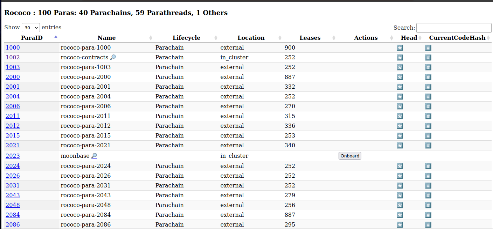
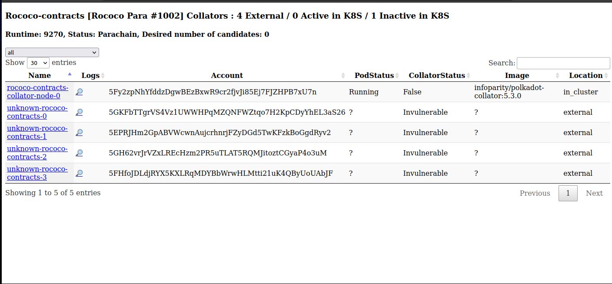
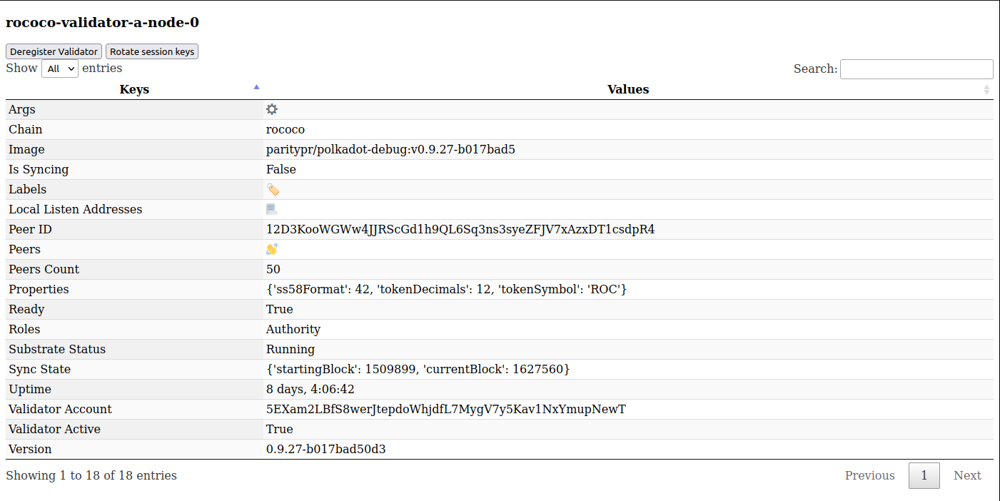
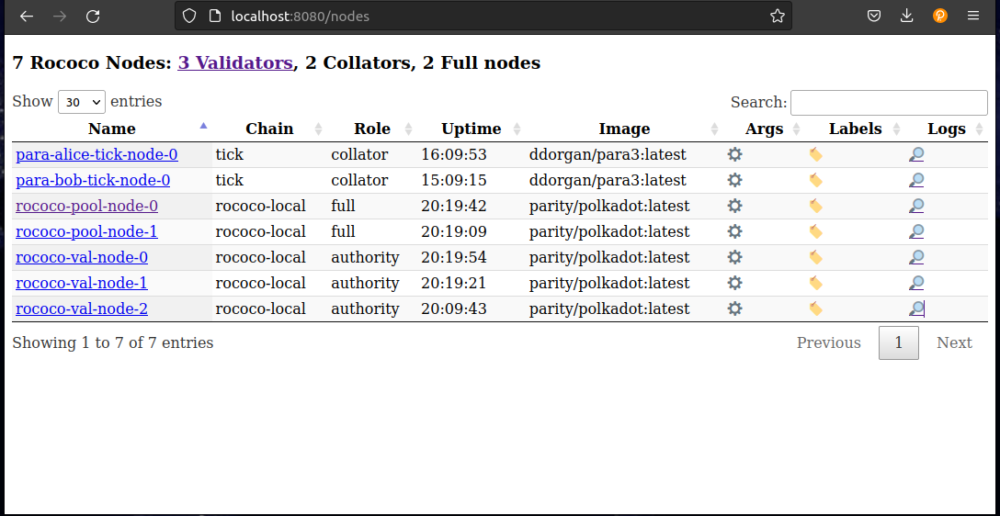
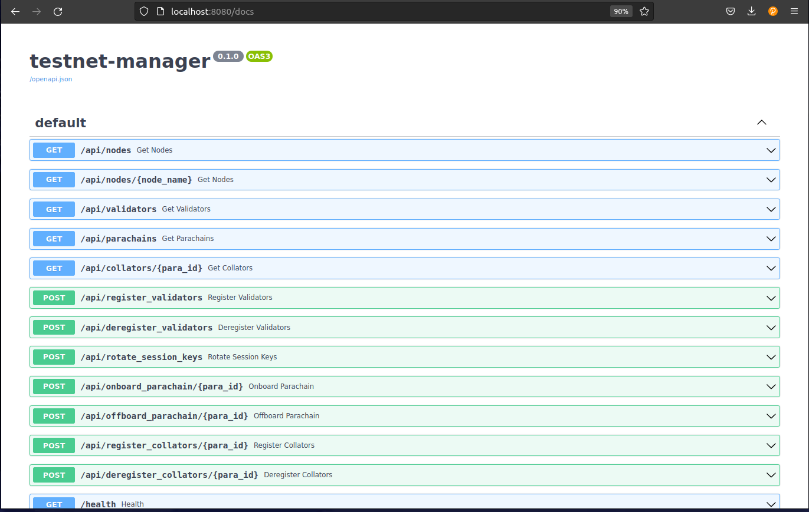

Overview
This guide contains the following sections:
- How-to guides: Getting started with specific use case, eg. deploying a parachain network.
- Explanations: Explanations of concepts and configurations relevant to Polkadot blockchain infrastructure.
- References: Index of useful links and tools.
How-to Guides
This section provides useful guides for getting started with Polkadot infrastructure.
Guide: Deploying a Parachain Network
This guide demonstrates the deployment of a parachain test network composed of 2 collators (nodes authoring blocks) and 1 RPC node. We are using Rococo as an example, but this approach would work similarly for any Relaychain, whether it is a testnet (Westend, Rococo, Paseo) or a mainnet (Polkadot, Kusama).
Preparations
Hardware
For this example network, you will need 3 machines. The specifications of these machines will depend on your intended usage. For a testnet, medium-sized virtual machines with 2 to 4 cores will suffice. However, for mainnet nodes, it is recommended to follow the "validator reference hardware" as detailed in the Polkadot Wiki.
Requirements:
- The machines should have a public IP and allow network access on their P2P ports (defaults 30333 and 30334) as well as the RPC port for the RPC node (9944 for ws or 443 for wss).
- The machine should have a big enough disk to host the relay-chain pruned database (>250 GB for Rococo)
- You should have obtained SSH access to these machines.
Parachain binary or docker image
Prepare the binary for use with Ansible
To deploy your network with the Ansible node role, you will need to have the node binary available from a public URL. If this binary is not already available for your parachain, you will need to build it yourself using the following command:
cargo build --release
Then publish the node binary present in target/releases somewhere and note down the public URL. One option to One option to do this is to add it as a GitHub release asset.
In this guide, we will use the parachain-template-node that you can get from paritytech/polkadot-sdk-parachain-template.
This binary is used to deploy system parachain nodes, such as asset-hub and bridge-hub and available at https://github.com/paritytech/polkadot-sdk/releases/latest/download/polkadot-parachain.
Prepare the docker image for use with Kubernetes
To deploy your network with the node helm-chart, you will need to have a node docker image published to a public registry.
Generate parachain private keys
Generate static node keys (aka network keys)
Node keys are used to identify nodes on the P2P network with a unique PeerID. To ensure this identifier persists across restarts, it is highly recommended to generate a static network key for all nodes. This practice is particularly important for bootnodes, which have publicly listed addresses that are used by other nodes to bootstrap their connections to the network.
To generate a static node key:
parachain-template-node key generate-node-key --file node.key
# example output
12D3KooWExcVYu7Mvjd4kxPVLwN2ZPnZ5NyLZ5ft477wqzfP2q6E # PeerId (hash of public node key)
cat node.key
d5e120e30dfb0eac39b1a6727d81c548e9c6b39ca97e565438a33d87726781a6% # private node key, do not copy the percent sign
Generate keys for your collators (account+aura keys)
For parachains using the collatorSelection pallet to manage their collator set, you will need to generate a set of keys for each collator:
- Collator Account: a regular substrate account
- Aura keys (part of the collator “session keys”)
In this example, we will use the same seed for both. Use the following command generate a secret seed for each collator:
parachain-template-node key generate
You can derive public keys and account IDs from an existing seed by using:
parachain-template-node key inspect "<secret-seed>"
# example output
Secret Key URI `//Alice` is account:
Network ID: substrate
Secret seed: 0xe5be9a5092b81bca64be81d212e7f2f9eba183bb7a90954f7b76361f6edb5c0a
Public key (hex): 0xd43593c715fdd31c61141abd04a99fd6822c8558854ccde39a5684e7a56da27d
Account ID: 0xd43593c715fdd31c61141abd04a99fd6822c8558854ccde39a5684e7a56da27d
Public key (SS58): 5GrwvaEF5zXb26Fz9rcQpDWS57CtERHpNehXCPcNoHGKutQY
SS58 Address: 5GrwvaEF5zXb26Fz9rcQpDWS57CtERHpNehXCPcNoHGKutQY
Reserve a ParaId on Rococo
Note: although it is possible to use specific UIs for registering your parachain, this guide only documents how to do it by submitting extrinsics directly through the Polkadot.js Console.
To get reserve a ParaId for your parachain on Rococo, navigate to the Polkadot.js Apps interface.
- Ensure you are connected to the Rococo network by selecting the appropriate RPC endpoint (
wss://rococo-rpc.polkadot.io). - Go to the "Developer" tab and select "Extrinsics".
- Choose
registrar.reservefrom the dropdown menu and execute it with your account. - Check the included extrinsic result in the block to find your reserved
para_idand note it down.
Create your Network Chainspec
When launching a new parachain network, customizing the chainspec (chain specification) is a crucial step.
Export your runtime file
First export your runtime file from your node binary (here --raw is used to export the output as binary not hex string):
parachain-template-node export-genesis-wasm --raw > runtime.wasm
If you want to select a specific built-in runtimle of your binary, add --chain chain-name to your command.
Prepare your genesis patch config
Save the following to genesis-patch.json (replace keys and configuration with your own):
{
"balances": {
"balances": [
[
"5GrwvaEF5zXb26Fz9rcQpDWS57CtERHpNehXCPcNoHGKutQY",
1152921504606846976
],
[
"5FHneW46xGXgs5mUiveU4sbTyGBzmstUspZC92UhjJM694ty",
1152921504606846976
]
]
},
"collatorSelection": {
"candidacyBond": 16000000000,
"invulnerables": [
"5GrwvaEF5zXb26Fz9rcQpDWS57CtERHpNehXCPcNoHGKutQY",
"5FHneW46xGXgs5mUiveU4sbTyGBzmstUspZC92UhjJM694ty"
]
},
"session": {
"keys": [
[
"5GrwvaEF5zXb26Fz9rcQpDWS57CtERHpNehXCPcNoHGKutQY",
"5GrwvaEF5zXb26Fz9rcQpDWS57CtERHpNehXCPcNoHGKutQY",
{
"aura": "5GrwvaEF5zXb26Fz9rcQpDWS57CtERHpNehXCPcNoHGKutQY"
}
],
[
"5FHneW46xGXgs5mUiveU4sbTyGBzmstUspZC92UhjJM694ty",
"5FHneW46xGXgs5mUiveU4sbTyGBzmstUspZC92UhjJM694ty",
{
"aura": "5FHneW46xGXgs5mUiveU4sbTyGBzmstUspZC92UhjJM694ty"
}
]
]
},
"parachainInfo": {
"parachainId": 4435
},
"polkadotXcm": {
"safeXcmVersion": 4
},
"sudo": {
"key": "5GrwvaEF5zXb26Fz9rcQpDWS57CtERHpNehXCPcNoHGKutQY"
}
}
In this example:
balances: initial account balancescollatorSelection: configure the collatorSelection pallet properties, in this example we set Alice and Bob as initial invulnerable collators.session.keys: initial session keysparachainInfo.parachainId: parachain IDsudo.keys: initial sudo key account
Note that:
5GrwvaEF5zXb26Fz9rcQpDWS57CtERHpNehXCPcNoHGKutQY: Alice's account address5FHneW46xGXgs5mUiveU4sbTyGBzmstUspZC92UhjJM694ty: Bob's account address
Generate a customized plain Chainspec
With the chain-spec-builder utility, we can generate a chainspec file using only the runtime wasm file on which we will apply a patch describing the customized genesis config we want to apply
Download the chain-spec-builder binary from the latest polkadot-sdk releases. Then execute it, taking as input the runtime and genesis patch files:
chain-spec-builder -c chainspec.plain.json create -n "Test Parachain" -i test-parachain -t live -r runtime.wasm patch genesis.patch.json
To work properly as a parachain chainspec, add the following fields to your chainspec.plain.json:
{
"protocolId": "template-local",
"properties": {
"ss58Format": 42,
"tokenDecimals": 12,
"tokenSymbol": "UNIT"
},
"para_id": 4435,
"relay_chain": "rococo",
...
You also need to set your bootNodes addresses, any node which has a public IP or DNS can be a bootnode:
{
"bootNodes": [
# eg. IP bootnode
"/ip4/<Node-Public-IP>/tcp/30333/p2p/<Node-ID>"
# eg. DNS bootnode
"/dns/<Node-Public-DNS>/tcp/30333/p2p/<Node-ID>",
# (Optional) WSS Bootnodes (for light clients, requires a TLS cert, see https://wiki.polkadot.network/docs/maintain-bootnode)
"/dns/<Node-Public-DNS>/tcp/443/wss/p2p/<Node-ID>",
...
}
Convert your Plain Chainspec to Raw
To initialize the genesis storage for your chain, you need convert your chainspec from plain to raw format. This process transforms the human-readable keys in the plain chainspec into actual storage keys and defines a unique genesis block.
A unique raw chainspec can be created from the plain chainspec with this command:
parachain-template-node build-spec --chain chainspec.plain.json --raw > chainspec.raw.json
⚠️ Only use the raw chainspec to launch your chain, not the plain chainspec.
(Optional) Dry-run your Parachain Network Locally
You should now have everything ready to launch your network locally to validate that everything is properly set up.
- Start your node (we use the
--tmpflag to prevent the node database files from being persisted to disk):
parachain-template-node --chain chainspec.raw.json --tmp
- Connect to it with Polkadot.js Apps on
ws://127.0.0.1:9944. - You can inspect the chain state in Polkadot.js Apps to verify that everything is in order for the launch.
Note: if you look at the node logs, it should be starting to sync the relay-chain (Rococo in our case). You don’t have to wait until it is fully synced.
Deploy your nodes
You can use any method you choose to set up your nodes on your machines, we recommend either Ansible
Deploy your nodes with Ansible
Clone the project at paritytech/parachain-deployment-quickstart and follow instructions in the ansible folder.
Deploy your nodes with Kubernetes
Clone the project at paritytech/parachain-deployment-quickstart and follow instructions in the kubernetes folder.
Register and activate your Parachain on the Relaychain
Register parachain genesis code and state on relay-chain
You can export the genesis runtime (WASM code) and state files from your chainspec. Then, these files can be registered on the relaychain to initialize your parachain.
- Export the genesis state:
parachain-template-node export-genesis-state --chain chainspec.raw.json > genesis_state_head
- Export the genesis runtime:
parachain-template-node export-genesis-wasm --chain chainspec.raw.json > genesis_wasm_code
- Register your parachain genesis configuration on the relay-chain by executing the
registrar.registerextrinsic on Rococo:id: your parachain IDgenesisHead: select thegenesis_state_headfilevalidationCode: select thegenesis_wasm_codefile
Obtain on-demand coretime to produce your first block
- Execute extrinsic:
onDemandAssignmentProvider.placeOrderAllowDeathoronDemandAssignmentProvider.placeOrderKeepAlive:maxAmount:10000000000000(13 zeros, ie. 10 ROC)paraId: your parachain ID
After executing this, you should have successfully produced your first block !
INFO tokio-runtime-worker substrate: [Parachain] ✨ Imported #1 (0xa075…10d6)
Manage Coretime for your chain
To allow your parachain to produce blocks it needs to be allocated coretime (time allocated for utilizing a core) on the relaychain. What we mean by "core" is the ability of the relaychain (and its validators) to validate the new blocks of a parachain (received from the collators) so that they are “included” in Polkadot as finalized parachain blocks.
There are 2 types of coretime:
- On-demand coretime: lets users buy coretime by the block. Useful for parachains which don’t require continuous block production
- Bulk coretime: an allocation of uninterrupted 28 days (default region length) of coretime (possibly split in timeslices)
For more information, please refer to the Parachain Coretime Guide.
Reserve Bulk Coretime
- Go on Lastic Rococo Coretime Sales page and buy 1 core
- Go on Lastic Rococo Homepage, click on the “core nb X” that you own to show its dedicated page, then click "assign core".
Assign it to your ParaID and Finality:
Final
Note: any account with enough funds can buy and assign coretime for a parachain.
Renew Bulk Coretime
TODO
Explanations
General Approach to Infrastructure
It is highly recommended that projects deploying networks have an infrastructure as code mindset. The infrastructure components in deployments should be written in code and put in a version control system.
This ensures that:
- Your Infrastructure is in a known state
- Version control is available to see changes and enforce reviews etc...
- Rolling back is made very easy
- There are no manual actions required to redeploy

General Approach to Security
One of the main desired properties of a blockchain is security, so having a very ‘secure by default’ approach to your infrastructure should always be in the forefront of your mind when deploying new networks.
On the infrastructure side, having strict rules and blocking any non-required communication is just a starting point. Other things that should be considered are things like log monitoring, bastion hosts being required for access, 2FA for ssh etc…
On the chain operations side, there are two very useful concepts to increase your security.
First is using cold / warm / hot keys, so that the compromise of say a session key would not lead to any funds being stolen. Also using multisig accounts on offline devices can greatly help security and also give an on-chain audit trail of all actions, allows for alerting for any onchain actions etc...

Proxy accounts also let you limit the permission that an account or multisig account has on a particular target account (e.g. only staking functions can be executed by the staking controller multisig account and require 3 of 5 people to approve).
Deployments
This section describes the various types of deployments and options used for each.
Blockchain Node Roles
A non exhaustive list of some common roles assumed by nodes:
| Role | Description |
|---|---|
| Validator | Secures the Relay Chain by staking DOT, validating proofs from collators on parachains and voting on consensus along with other validators. |
| Collator | Maintains a parachain by collecting parachain transactions and producing state transition proofs for the validators. |
| Bootnode | A node with a static address and p2p public key, used to bootstrap a node onto the network’s distributed hash table and find peers. |
| RPC Node | Expose an RPC interface over http or websocket for the relay chain or parachain and allow users to read the blockchain state and submit transactions (extrinsics). There are often multiple RPC nodes behind a load balancer. |
Additionally, we also usually distinguish types of nodes:
| Type | Description |
|---|---|
| Full Node | A node which is syncing the relay chain or parachain to the current best block. It can make use of database pruning to reduce its disk usage. |
| Archive Node | A full node which has a complete database starting all the way from the genesis block. |
| Light Node | Also called light client, can connect to a chain network but does not require to have full copy of the entire blockchain |
Simplified Diagram of the Parachain Network architecture
The diagram below illustrate how different nodes play different roles in the network by having different configuration.
- Bootnodes expose their P2P port behind an easy to find IP or DNS address.
- RPC nodes expose their RPC endpoint publicly.
- Collators sign blocks and propose them for validation to the Relaychain validators
- We can adjust the database pruning (archive or pruned) depending on the node role.
Downsides of deploying nodes without clear role separation
Although, it is possible for a single node to assume multiple roles (collator, RPC, bootnode), robust network deployments are composed of multiple nodes of each types to ensure reliability.
For example, if a collator node also serves as an RPC node, receiving increased user traffic might overload the node and bring down block production. To prevent this from happening, it is possible to set up several dedicated RPC nodes behind a load balancer. Similarly, setting up additional collators in your network will allows downtime of fraction of the collator set without slowing down block production.
Deployment Targets
A non-exhaustive list of some common deployment targets:
| Type | Description |
|---|---|
| Physical Server | Usually a rack mounted server sitting in a data center. |
| Virtual Machine | A virtual machine hosted by one of many cloud providers or self-hosted onsite. |
| Kubernetes | A container orchestration engine to host your blockchain instances. This option is only recommended if you already have prior experience with Kubernetes, especially in production environments. |
| Local Container | An instance running on a local container engine (e.g. containerd, docker, Podman). |
Special Options Per Host Type
| Type | Function |
|---|---|
| Validator | Should at least be running with the --validator flag to enable block validation. Also keys should have been injected or the RPC author_rotateKeys called. |
| Collator | Should at least be running with the --collator flag to enable parachain collation. |
| Bootnode | A node with a static key file so the p2p public address is always the same. Store this private key in a file and use the option: --node-key-file /path/to/file |
| RPC Node | Use these options to allow 5000 public RPC/WS connections: --unsafe-ws-external --rpc-methods Safe --rpc-cors ‘*’ --ws-max-connections 5000 |
| Archive Node | Use -–pruning=archive to not prune any block history |
| Full Node | N/A |
Parachain Specifics
When running a parachain then you will need two sets of arguments, one for the relay chain and one for the parachain. Used in the format:
./statemine $PARACHAIN_OPTIONS -- $RELAYCHAIN_OPTIONS
A real life example of this while executing as a statemine collator would be:
./statemine --chain statemine --in-peers 25 --out-peers 25 --db-cache 512 --pruning=1000 --unsafe-pruning -- --chain kusama -db-cache 512 --pruning=1000 --wasm-execution Compiled
Server Deployments
Systemd
Overview
Systemd is a common way to manage services on Linux hosts. It can ensure the process is enabled and running, allows you to set a policy for restarts and also set the user running the host, limit the memory usage etc...
It can also use an environment variable file which can help abstract the variables into its own file per server.
Simple Example
A simple example running a local dev chain as Alice, assuming the username is called polkadot would look like:
[Unit]
Description=Polkadot Validator
[Service]
User=polkadot
ExecStart=/home/polkadot/polkadot --dev --alice
Restart=always
RestartSec=90
[Install]
WantedBy=multi-user.target
This file should be placed in /etc/systemd/system/polkadot.service and then enabled with systemctl enable polkadot then systemctl start polkadot to start the service.
Using Environment Variable Files
If we want to remove some options from the systemd file itself (e.g. --dev --alice) and put them in an environment variable file then the systemd service would now look like:
[Unit]
Description=Polkadot Validator
[Service]
User=polkadot
EnvironmentFile=/etc/default/polkadot
ExecStart=/home/polkadot/polkadot $START_OPTIONS
Restart=always
RestartSec=90
[Install]
WantedBy=multi-user.target
Then you would need to create a file in /etc/default/polkadot which looks like:
START_OPTIONS="--dev --alice"
You can do this with multiple variables to abstract the configuration from the systemd file running on your hosts.
Logging
Local Logging
By default, output from your systemd service will go to local syslog. This will mean it ends up in a place like /var/log/syslog or /var/log/messages
You can also view these using the journalctl command. To tail the current output of the polkadot process run:
journalctl -u polkadot -f
It is also possible to remove old logs (say older than two days ago) using a command:
journalctl -u polkadot --vacuum-time=2d
Or to retain only the past 1G of data run:
journalctl --vacuum-size=1G
Remote Logging
In a setup with many hosts you will want to aggregate the logs at a central point, some common options include Loki or Elasticsearch.
Loki
To log to a remote Loki instance you need to install the promtail package. An example configuration file to send logs to a remote host:
# promtail server config
server:
http_listen_port: 9080
grpc_listen_port: 0
log_level: info
positions:
filename: /var/lib/promtail/positions.yaml
# loki servers
clients:
- url: http://myloki.mycompany.com/loki/api/v1/push
backoff_config:
min_period: 1m
max_period: 1h
max_retries: 10000
scrape_configs:
- job_name: journald
journal:
max_age: 1m
path: /var/log/journal
labels:
job: journald
pipeline_stages:
- match:
selector: '{job="journald"}'
stages:
- multiline:
firstline: '^\d{4}-\d{2}-\d{2} \d{2}:\d{2}:\d{2}\.\d{3}'
max_lines: 2500
- regex:
expression: '(?P<date>\d{4}-\d{2}-\d{2} \d{2}:\d{2}:\d{2}\.\d{3})\s+(?P<level>(TRACE|DEBUG|INFO|WARN|ERROR))\s+(?P<worker>([^\s]+))\s+(?P<target>[\w-]+):?:?(?P<subtarget>[\w-]+)?:[\s]?(?P<chaintype>\[[\w-]+\]+)?[\s]?(?P<message>.+)'
- labels:
level:
target:
subtarget:
Elasticsearch
To log to a remote Elasticsearch cluster you need to install the logstash package. An example configuration would look like:
<<<<<<< HEAD
input {
journald {
path => "/var/log/journal"
seekto => "tail"
thisboot => true
filter => {
"_SYSTEMD_UNIT" => "polkadot.service"
}
type => "systemd"
}
=======
```yaml
input {
journald {
path => "/var/log/journal"
seekto => "tail"
thisboot => true
filter => {
"_SYSTEMD_UNIT" => "polkadot.service"
}
type => "systemd"
}
>>>>>>> main
}
filter {
date {
match => ["timestamp", "YYYY-mm-dd HH:MM:ss.SSS"]
target => "@timestamp"
}
mutate {
rename => [ "MESSAGE", "message" ]
remove_field => [ "cursor", "PRIORITY", "SYSLOG_FACILITY", "SYSLOG_IDENTIFIER", "_BOOT_ID", "_CAP_EFFECTIVE", "_CMDLINE", "_COMM", "_EXE", "_GID", "_HOSTNAME", "_MACHINE_ID", "_PID", "_SELINUX_CONTEXT", "_STREAM_ID", "_SYSTEMD_CGROUP", "_SYSTEMD_INVOCATION_ID", "_SYSTEMD_SLICE", "_SYSTEMD_UNIT", "_TRANSPORT", "_UID" ]
}
if ([message] =~ ".*TRACE .*") { drop{ } }
grok {
match => { "message" => "%{NOTSPACE:thread} %{LOGLEVEL:log-level} %{NOTSPACE:namespace} %{GREEDYDATA:message}" }
}
}
output {
elasticsearch {
hosts => ["https://myelasticsearch.mycompany.com:9243"]
user => "username"
password => "password"
index => "logstash-polkadot-%{+YYYY.MM.dd}"
}
}
Logging Options
Logging output from any substrate based changes has many log levels and targets. All targets are set to info logging by default. You can adjust individual log levels using the --log (-l short) option, for example -l afg=trace,sync=debug or globally with -ldebug.
Levels:
- error
- warn
- info
- debug
- trace
Targets:
- afg
- aura
- babe
- beefy
- db
- gossip
- header
- peerset
- pow
- rpc
- runtime
- runtime::contracts
- sc_offchain
- slots
- state-db
- state_tracing
- sub-libp2p
- sync
- telemetry
- tracing
- trie
- txpool
Automation
Cloud Provisioning
There are multiple options to provision cloud resources, which can either be provider specific and some tools are more cloud-agnostic.
Popular Cloud Provider Specific Deployment Tooling
These vendor specific deployment tools are easy to use, have great examples and support. However, when using multiple providers with custom scripting formats, making a basic to your infrastructure can require changes to multiple sections of code, for each provider to do the same thing (e.g. open a port on a host).
A more general solution where a change can be specified once and be used with multiple providers is using Terraform. Which currently has more than 2000 providers supported.
Terraform
Terraform is a very commonly used tool for creating all sorts of cloud resources. It supports many different providers along with having excellent modules for the main three providers (AWS, Azure, GCP). Many projects rely on this for their infrastructure deployments.
It uses HashiCorp’s HashiCorp Configuration Language, which makes it very easy to abstract configuration, avoid the reuse of code and enables you to plug modules together easily (e.g. RPC nodes along with a frontend load balancer).
The code is also easy to read and should be in version control. Multiple environments can be defined, so you can ensure you are using the same code on dev / test / production.
Two ways to preconfigure your host after deployment using terraform directly is to either:
- Use a pre-packaged image with all of your software (e.g. packer or similar tooling)
- Use a cloud-init script to execute a certain script to preconfigure your base image
Some examples of using terraform with multiple providers can be found in the W3F’s polkadot-validator-setup GitHub repo.
Click here for a list of terraform providers.
Host Maintenance
Once your hosts are deployed you will need to configure the hosts and install the required software, configuration files etc… As mentioned this can be done in a few ways using terraform itself, however another very flexible way of configuring hosts is using Ansible.
| Component | Description |
|---|---|
| Playbook | Playbooks are the language by which Ansible orchestrates, configures, administers, or deploys systems |
| Role | Roles are units of organization in Ansible. Assigning a role to a group of hosts (or a set of groups, or host patterns, and so on) implies that they should implement a specific behavior |
When deploying our blockchain nodes, we will need an inventory which contains a list of our hosts and the groups they are in (e.g. validator, collator, rpc) and maybe some secrets which can be encrypted inline within the inventory using Ansible vault. We will then call a playbook which links hosts/groups in the inventory with roles to execute on each host.
Some examples of using Ansible can be found in the Paritytech's Ansible Galaxy GitHub repo. Specifically the node role.
Kubernetes
As previously mentioned, Kubernetes deployments are only recommended for people with good prior operating experience of Kubernetes.
Helm Chart
Overview
Parity maintains a helm GitHub repo @ https://github.com/paritytech/helm-charts - Inside this repo is the node chart which should be used for deploying your Substrate/Polkadot binary.
All variables are documented clearly in the README.md and there’s an example local-rococo which you can start working from.
Example Rococo Local Chain
This is a simple example of deploying a rococo-local test chain in Kubernetes. Two validators and two full nodes will be deployed via the helm chart. Once both validators are running you will see block production. A custom node key is used on the Alice validator which all other hosts use as a bootnode.
First install the helm repo
helm repo add parity https://paritytech.github.io/helm-charts/
Deploy Validator Alice
Alice will be deployed in a stateful set and use an example custom node key, along with deploying a service to be used as a bootnode:
helm install rococo-alice parity/node --set node.role="validator" --set node.customNodeKey="91cb59d86820419075b08e3043cd802ba3506388d8b161d2d4acd203af5194c1" --set node.chain=rococo-local --set node.perNodeServices.relayP2pService.enabled=true --set node.perNodeServices.relayP2pService.port=30333 --set node.flags="--alice --rpc-external --ws-external --rpc-cors all --rpc-methods=unsafe"
Deploy Validator Bob
helm install rococo-bob parity/node --set node.role="validator" --set node.chain=rococo-local --set node.flags="--bob --bootnodes '/dns4/rococo-alice-node-0-relay-chain-p2p/tcp/30333/p2p/12D3KooWMeR4iQLRBNq87ViDf9W7f6cc9ydAPJgmq48rAH116WoC'"
Deploy Two Full Nodes
helm install rococo-pool parity/node --set node.chain=rococo-local --set node.replicas=2 --set node.flags="--bootnodes '/dns4/rococo-alice-node-0-relay-chain-p2p/tcp/30333/p2p/12D3KooWMeR4iQLRBNq87ViDf9W7f6cc9ydAPJgmq48rAH116WoC'"
Once these steps are complete you will have a working rococo-local test chain with two validators and two full nodes.
GitOps Tooling
Below are some useful GitOps tool for managing helm releases. Here is a list of tool from simplest to more advanced:
Important Chart Options
| Option | Description |
|---|---|
| node.chain | Network to connect to |
| node.command | Binary to use |
| node.flags | Flags to use with binary in container |
| node.customChainspecUrl | Custom Chainspec URL |
Polkadot Key Injection
Chart Settings:
Ensure allowUnsafeRpcMethods: true is set in the helm chart values.
Example Key Injection Values:
Add example keys, in this case //Testing/babe (sr25519) and //Testing//gran (ed25519) on chain polkadot-dev:
keys:
- type: "gran"
scheme: "ed25519"
seed: "//Testing//gran"
- type: "babe"
scheme: "sr25519"
seed: "//Testing"
extraDerivation: //babe
Get public keys:
$ polkadot key inspect //Testing//babe --network polkadot
Secret Key URI `//Testing//babe` is account:
Network ID: polkadot
Secret seed: 0x35993b5ca38b5909a26dbc15b736dede3bdf233ce63380f6ae62cb0ca096483b
Public key (hex): 0x28c63dd7bb87238daf363a539da87d3c67d66a199e24f7751432e4f2363e8147
Account ID: 0x28c63dd7bb87238daf363a539da87d3c67d66a199e24f7751432e4f2363e8147
Public key (SS58): 1vToiVGY8q2kuG5XaN4JXrydgmkvoNMPpbwb9fPU8uQuRM5
SS58 Address: 1vToiVGY8q2kuG5XaN4JXrydgmkvoNMPpbwb9fPU8uQuRM5
$ polkadot key inspect //Testing//gran --network polkadot --scheme ed25519
Secret Key URI `//Testing//gran` is account:
Network ID: polkadot
Secret seed: 0xbfc22ae1e901dbd25057747b315481cf8a470261ea81892a9aa31be1391a0dcb
Public key (hex): 0x7819b7ddc959b749a5da604c3a2d7d3e0097760be603d596f19d116d6207ad38
Account ID: 0x7819b7ddc959b749a5da604c3a2d7d3e0097760be603d596f19d116d6207ad38
Public key (SS58): 13iUPPkgWezjEpxFyfCKczLkrsBtJfwMWYhjDRwvtCKp1v3s
SS58 Address: 13iUPPkgWezjEpxFyfCKczLkrsBtJfwMWYhjDRwvtCKp1v3s
- Babe key: 0x28c63dd7bb87238daf363a539da87d3c67d66a199e24f7751432e4f2363e8147
- Grandpa Key: 0x7819b7ddc959b749a5da604c3a2d7d3e0097760be603d596f19d116d6207ad38
Verify keys exist
$ yarn run:api rpc.author.hasKey 0x28c63dd7bb87238daf363a539da87d3c67d66a199e24f7751432e4f2363e8147 babe
{
"hasKey": true
}
$ yarn run:api rpc.author.hasKey 0x7819b7ddc959b749a5da604c3a2d7d3e0097760be603d596f19d116d6207ad38 gran
{
"hasKey": true
}
Testnet Manager
The Testnet manager (helm chart) lets you dynamically control test networks via a simple UI or API. It gives you a single pane of glass to list, inspect and interact with the nodes (full nodes, validators and parachain collators) running in a given Kubernetes namespace.
Rococo Example View
List Parachains

List Parachain Collators

Inspect Validator Node

Usage
Requirements
The testnet manager requires the chain Sudo seed phrase to perform management functions. Also, some chain specific variables should be defined in a configmap, this can be added to the values.yaml:
configmap:
WS_ENDPOINT: "ws://rococo-alice-node-0.rococo:9944"
NODE_HTTP_PATTERN: "http://NODE_NAME.rococo:9933"
NODE_WS_PATTERN: "ws://NODE_NAME.rococo:9944"
HEALTHY_MIN_PEER_COUNT: "1"
LOG_LEVEL: DEBUG
secret:
SUDO_SEED: "0xe5be9a5092b81bca64be81d212e7f2f9eba183bb7a90954f7b76361f6edb5c0a" # Alice
VALIDATORS_ROOT_SEED: "test test test test test test test test test test test test"
Then install the testnet manager and port forward a connection using the output of helm install ...:
helm repo add parity https://paritytech.github.io/helm-charts/
helm repo update
helm install testnet-mgr parity/testnet-manager --values values.yaml
Frontend GUI
In the nodes section you can view all running nodes, their roles, chain, uptime, CLI arguments, and you can also view logs.

Interact with API via Frontend
It's possible to view the API calls and execute them via the GUI. The main functions are:
- Viewing nodes, validators, collators and parachains
- Registering / deregistering validators and collators
- Onboarding / off-boarding parachains
- Rotating session keys

Examples
Register a new validator in the StatefulSet called rococo-val-pool:
curl -X 'POST' \
'http://localhost:8080/api/register_validators?statefulset=rococo-val-pool' \
-H 'accept: application/json' \
-d ''
Onboard Parachain id 1000:
curl -X 'POST' \
'http://localhost:8080/api/onboard_parachain/1000' \
-H 'accept: application/json' \
-d ''
How does it work ?
The testnet-manager is deployed in the same Kubernetes namespaces as nodes deployed with the node helm-chart. As node pods deployed with the chart are tagged with the appropriate labels (e.g. chain name, para ID), the manager is able to query the Kubernetes API and list the running nodes for each network (relay-chain, parachains).
By combining this list of nodes with the on-chain state retrieved from RPC endpoints (e.g. list of active validators accounts), the manager can automate node key setup (by interacting directly with each node RPC endpoint) and registration (by submitting sudo extrinsics). Behind the scenes, it uses a derivation formula for generating deterministic Validator/Collator accounts addresses: "${VALIDATORS_ROOT_SEED}//${node-name}".
Monitoring Overview
Monitoring can be categorized into two main areas:
On-chain
This involves tracking events that occur on the blockchain. Examples include:
- Transactions by specific addresses
- Changes in the validator set
On-chain monitoring typically involves checking blockchain data via RPC nodes to assess values, delays, and the timing of events. It is recommended to run your own RPC servers to avoid potential issues with public RPC nodes. There are useful tools such as Polkabot and Polkadot-Basic-Notification to help with on-chain monitoring.
On-Host
On-host monitoring involves tracking the individual node itself. Examples include:
- Current block height
- Number of peer-to-peer (P2P) connections
- Finality lag
To monitor individual node, polkadot-sdk binary exposes metrics in a Prometheus type format at http://host:9615/metrics. By default, this endpoint is only exposed on the local network interface, but you can expose it on all interfaces using the --prometheus-external flag.
As the metrics provided by these endpoints don't include hosts metrics (e.g. CPU, memory, bandwidth usage), it is recommended to complement it with other tools such as Prometheus node exporter which needs to be installed on the same host.
Monitoring Stack
Polkadot tools
- polkadot-introspector: The Polkadot Introspector is a collection of tools for monitoring and introspection of Polkadot or other substrate-based blockchains.
- polkadot-telemetry: The telemetry server is used for real time information from nodes, showing information about their name, location, current best & finalized blocks, and others. It gives a useful dashboard to view the state of nodes. An example of live running Telemetry site is https://telemetry.polkadot.io/
Non-Polkadot specific tools
The recommended Polkadot monitoring stack consists of the following tools:
- Prometheus: A systems and service monitoring system based on a timeseries database.
- Grafana: allows you to query, visualize, and understand your metrics.
- Alertmanager: Creates and routes alerts to the tool of your choice (Email / SMS / Telegram / PagerDuty / Slack / Matrix) based on alert rules and metrics
- Loki - A highly scalable log aggregation system that allows you to view and search logs from all your infrastructure in one place.
For available set of Polkadot dashboards, alerts and rules are listed in polkadot-monitoring-mixin repository.
An example of the metric dashboard from polkadot-monitoring-mixin:
Prometheus
Grafana
Alertmanager
Loki
Keys And Accounts
This page will describe some basic information on keys and accounts. For a more general and detailed explanation see learn accounts on the polkadot wiki page.
Encryption Schemes
| Name | Type |
|---|---|
| ed25519 | The vanilla ed25519 implementation using Schnorr signatures. |
| sr25519 | The Schnorrkel/Ristretto sr25519 variant using Schnorr signatures. (default) |
| ecdsa | ECDSA signatures on secp256k1 |
Session Key Types
| Name | Type |
|---|---|
| grandpa | ed25519 |
| authority_discovery | sr25519 |
| aura | sr25519 |
| babe | sr25519 |
| para_validator | sr25519 |
| para_assignment | sr25519 |
| beefy | ecdsa |
Key Generation and Inspection
You can use polkadot-parachain keys or the subkey command to generate and inspect keys.
Two important subcommands are:
generateCreate a new random account and print the private key data or save to a file.inspectView the account data for an account by passing a secret phrase or seed.
Some important options are:
--networkspecify the network the keys will be used on, default is substrate.--schemethe scheme for the keys, default is sr25519.
Generate
Create a Random Account Key
$ polkadot-parachain key generate
Secret phrase: test test test test test test test test test test test junk
Network ID: substrate
Secret seed: 0x4ca479f5e0dc0ee04ebcbadb64c220267dad42b8cfa4da1f0874787523b4709c
Public key (hex): 0xd000ac5048ae858aca2e6aa43e00661562a47026fe88ff83992430204a159752
Account ID: 0xd000ac5048ae858aca2e6aa43e00661562a47026fe88ff83992430204a159752
Public key (SS58): 5GmS1wtCfR4tK5SSgnZbVT4kYw5W8NmxmijcsxCQE6oLW6A8
SS58 Address: 5GmS1wtCfR4tK5SSgnZbVT4kYw5W8NmxmijcsxCQE6oLW6A8
You can save it to a file using
Inspection
Inspect Created Key
$ polkadot-parachain key inspect "test test test test test test test test test test test junk"
Secret phrase: test test test test test test test test test test test junk
Network ID: substrate
Secret seed: 0x4ca479f5e0dc0ee04ebcbadb64c220267dad42b8cfa4da1f0874787523b4709c
Public key (hex): 0xd000ac5048ae858aca2e6aa43e00661562a47026fe88ff83992430204a159752
Account ID: 0xd000ac5048ae858aca2e6aa43e00661562a47026fe88ff83992430204a159752
Public key (SS58): 5GmS1wtCfR4tK5SSgnZbVT4kYw5W8NmxmijcsxCQE6oLW6A8
SS58 Address: 5GmS1wtCfR4tK5SSgnZbVT4kYw5W8NmxmijcsxCQE6oLW6A8
Inspect Created Key With Hard Derivation //Stash//0
$ polkadot-parachain key inspect " test test test test test test test test test test test junk//Stash//0"
Secret Key URI ` test test test test test test test test test test test junk//Stash//0` is account:
Network ID: substrate
Secret seed: 0x88f170a1438f83de6c2b845282ebb577dfcaee4c896655e64777ba220b3ad33d
Public key (hex): 0xa2a73aaf576ed83371c92642a80706bf4b007c40f689d649aa7b075833d7242c
Account ID: 0xa2a73aaf576ed83371c92642a80706bf4b007c40f689d649aa7b075833d7242c
Public key (SS58): 5FjyHtMBm7kArqgSX52DAQvZeJ2Tq5sQBwFfSmZ3NWMHs4Be
SS58 Address: 5FjyHtMBm7kArqgSX52DAQvZeJ2Tq5sQBwFfSmZ3NWMHs4Be
Managing a node session keys
In Polkadot, Session Keys refer to the hot keys set on a node to perform various network operations, such as collating or validating blocks.
Create new session keys on a node via the author_rotateKeys RPC method
On the remote machine hosting the node, you can create new session keys with the following commmand:
curl -H "Content-Type: application/json" -d '{"id":1, "jsonrpc":"2.0", "method": "author_rotateKeys", "params":[]}' http://localhost:9944
The response output will then show the hex-encoded concatenation of the session public keys. This is intended to be submitted on-chain using the session.setKeys extrinsics.
Insert a specific key onto a node keystore via the author_insertKey RPC method
To inject a key via RPC, use the following command:
curl -H "Content-Type: application/json" \ --data '{ "jsonrpc":"2.0", "method":"author_insertKey", "params":["'"${KEY_TYPE}"'", "'"${KEY_SEED}"'"],"id":1 }' http://localhost:9933
Set:
KEY_TYPEto a session key type (eg.babe,grandpa)KEY_SEEDto a secret seed or private key
Insert a specific key onto a node keystore using the node binary
To inject a key via the node binary, use the following command:
polkadot-parachain key insert -d <my_chain_folder> --key-type ${KEY_TYPE} --scheme ${KEY_SCHEME} --suri ${KEY_FILE}
KEY_TYPE: a session key type (eg.babe,grandpa)KEY_SCHEME: an encryption scheme (eg.sr25519,ed25519,ecdsa)KEY_FILE: a plain text file which contains the seed or private key
Custom Chain - Chainspecs
This section will explain what is required to build a custom chain spec for your own network. For more in depth explanations on how chainspecs works internally, refer to the Polkadot-sdk Chainspec docs
Create Chain Spec
Create a non-raw chainspec for your network with:
./binary build-spec –chain chain-name --disable-default-bootnode > custom-chainspec.json
Important Fields:
| Field | Purpose |
|---|---|
| Name | Name of the network |
| id | Id of network, also used for the filesystem path |
| bootNodes | List of multiaddr’s of bootnodes for the network |
| protocolId | A unique identifier for the protocol |
| para_id | (Parachains only) numerical ID of the parachain slot |
| relay_chain | (Parachains only) Id of the relaychain to connect to |
| genesis.runtimeGenesis | (Plain chainspec only) Configuration of the genesis runtime |
| genesis.raw | (Raw chainspec only) Serialization of the raw of the genesis storage |
Once the values have been updated this chainspec should be converted in raw format using the command:
polkadot build-spec –chain custom-chainspec.json –raw > custom-chainspec-raw.json
Infrastructure Tooling References
This section is for listing some useful projects and tools that are relevant for node operators and developers. A community maintained Awesome Substrate is a more detailed general list.
Testing
| Project | Description |
|---|---|
| Zombienet | A great tool for deploying test setups. Providers include native, Podman and Kubernetes. Also supports running automated tests against these networks |
| smart bench | Smart contracts benchmarking on Substrate |
Frontends
| Project | Description |
|---|---|
| polkadot-js frontend | GitHub repo for [https://polkadot.js.org/apps/] - commonly used application for interacting with substrate and polkadot based chains |
| Staking Dashboard | A sleek staking dashboard using react and the polkadot-js library |
| contracts-ui | Web application for deploying Wasm smart contracts on Substrate chains that include the FRAME contracts pallet |
| Example polkadot-js-bundle | Use polkadot JavaScript bundles to write custom frontends |
Indexing Chain Data
| Project | Description |
|---|---|
| Substrate archive | Blockchain indexing engine using PostgreSQL |
| Subsquid | Blockchain indexing engine using GraphQL |
| SubQuery | Open source GraphQL indexing of any Substrate network (including EVM and WASM smart contract data) directly from the RPC node. SubQuery does not require any preprocessed data making it suitable for fast changing testnets |
CLI Utilities
| Project | Description |
|---|---|
| Subkey | Used for generating and restoring keys. Works with multiple networks and key schemes |
| polkadot-js-tools | A very flexible utility for executing API calls or running queries. |
| Subxt | Submits extrinsics via RPC |
Monitoring
| Project | Description |
|---|---|
| Polkabot | Polkabot is a Matrix chatbot that keeps an eye on the Polkadot network. |
| Polkadot-Basic-Notification | A basic, account-based, multi-transport notification service for the Polkadot ecosystem. |
| polkadot-watcher-transaction | The main use case of this application consits of a scanner that can be configured to start from a configured block number, and then it keeps monitoring the on-chain situation delivering alerts to a notifier. |
| polkadot-watcher-validator | The watcher is a nodeJs application meant to be connected with a substrate based node through a web socket. |
| It can then monitor the status of the node, leveraging on mechanisms such as the builtin heartbeat. | |
| polkadot-k8s-payouts | Tool that automatically claims your Kusama/Polkadot validator rewards. |